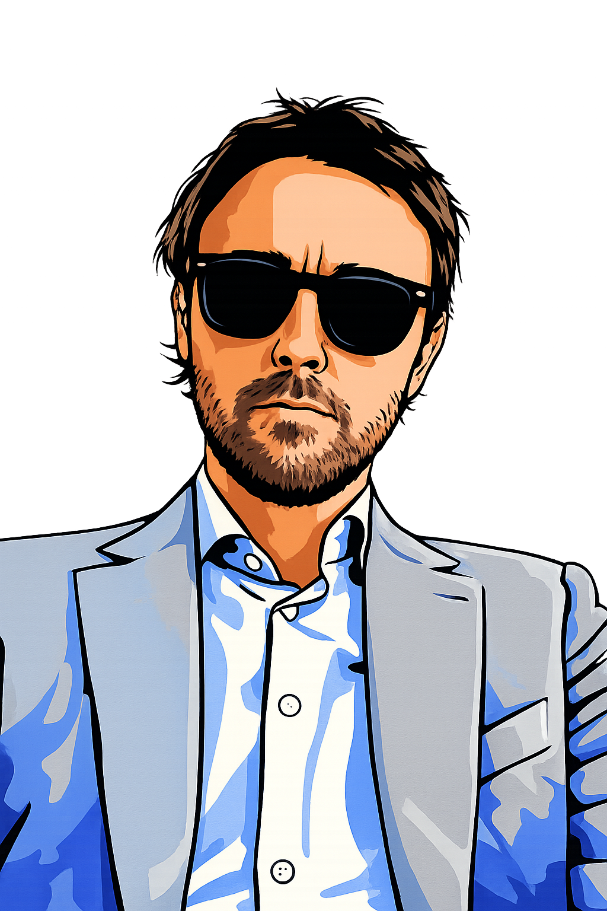

Builder and creative based in Austin, TX. I work across the stack — building AI-powered products and agencies, and making music that doesn't fit neatly into a box. I'm drawn to the places where technology and culture quietly collide — the stack and the stage, in equal measure.